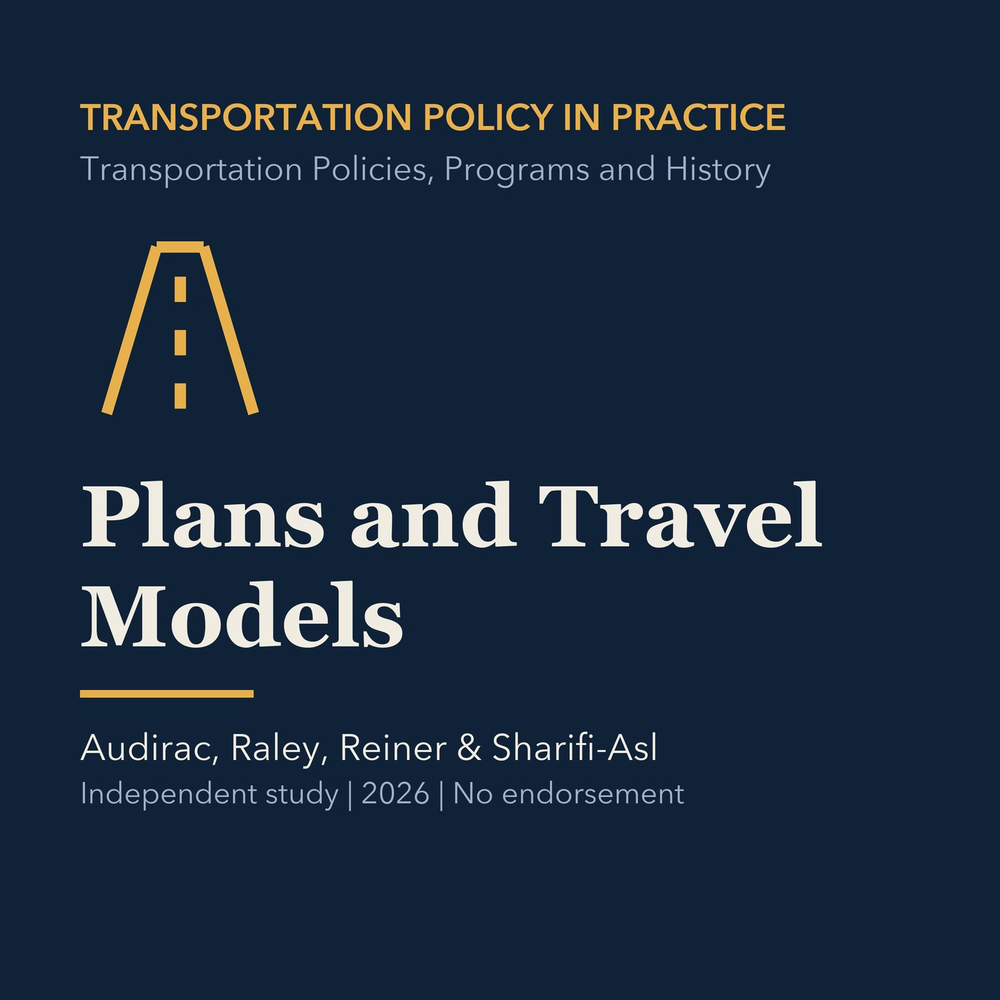

EPISODE 02
From Long-Range Plans to Travel Models
Explains metropolitan planning, institutional roles, the four-step model, and newer activity-based approaches, followed by a separate Torrance application.

- Stable GUID
174b5ff0-7312-53f9-a4bf-f861198ae076- Release
- transportation-policies-programs-history-v2026.3
- SHA-256
e5fc5c02d6d0e47e38f0bc4a60f9b3bae87b1cd300e8fa2bd4b4cb6bf1421ada